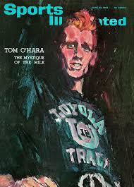
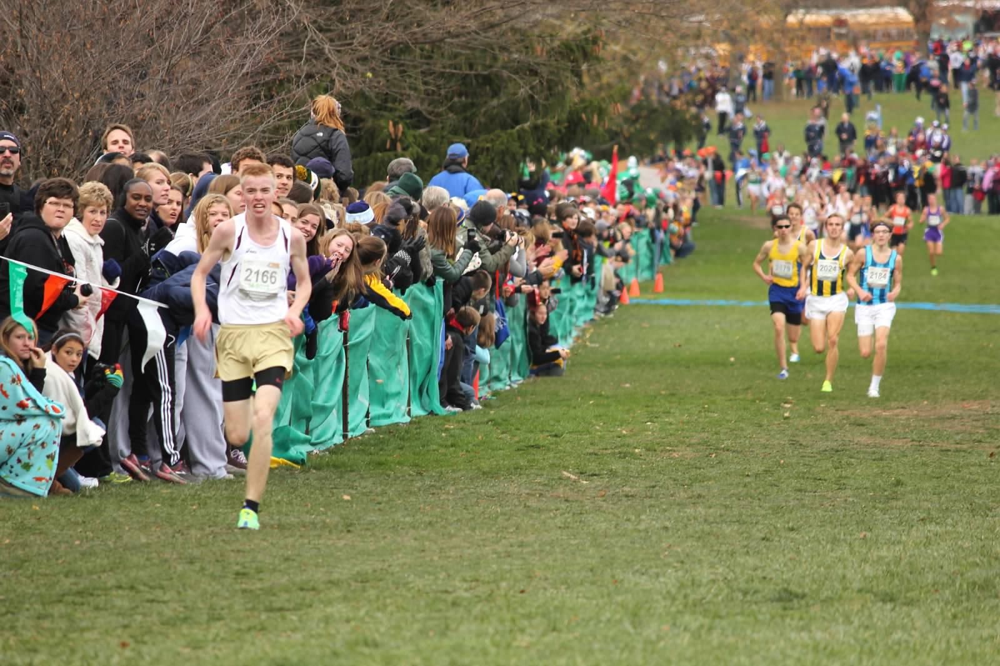

1869
Father Arnold Damen founds Saint Ignatius College Prep.
Program history
A timeline of program milestones, championship results, and notable performances.
1869–2024
Scroll through the defining moments in Saint Ignatius cross country history.
Static snapshot from Google SheetsFather Arnold Damen founds Saint Ignatius College Prep.
Saint Ignatius is a founding member of the Chicago Catholic League.
Saint Ignatius wins four CCL titles in a row, followed by a dominant run in the Chicago City Championships during the 1950s before joining the IHSA.
Ignatius graduate Tom O'Hara wins the NCAA Division I individual cross country title while running for Loyola University.
O'Hara becomes the first Illinois native to break the four-minute mile, running 3:59.4.
O'Hara sets an indoor mile world record of 3:56.6 at a packed Chicago Stadium, then represents the United States in the 1500m at the Tokyo Olympics.

Tim Smith becomes the first Wolfpack runner to earn All-State honors, clocking 14:46 for 24th place.
Mike Patton becomes the first individual state champion in school history, running 14:24 to win at historic Detweiler Park.
Saint Ignatius qualifies as a team for the IHSA State Meet for the first time and places 12th, led by Dave Walker's 15:29.
Saint Ignatius earns a second-place trophy at the IHSA State Meet. A tight pack led by Dwight Gilbert places all five scorers between 15:12 and 15:27.
Saint Ignatius wins the Chicago Catholic League title.
Saint Ignatius wins the Chicago Catholic League title.
Brendan Christiansen earns All-State honors, running 15:21 for 25th place.
Ignatius wins its first CCL title in 12 years and ends a 28-year drought by qualifying for the IHSA 3A State Meet. The team places 20th, highlighted by sophomore Jack Keelan's 14:36 for 12th.
Jack Keelan runs 14:05 to win the IHSA 3A State Meet, becoming Ignatius's second individual state champion. The performance ranked ninth all-time at Detweiler Park at the time. SICP also wins CCL.

Saint Ignatius places 16th at the IHSA 3A State Meet, led by Chris Korabik's 15:03.
Saint Ignatius places 14th at the IHSA 3A State Meet, led by Andy Weber's 15:02.
Dan Santino earns All-State honors, running 14:45 for 24th place.
Jack Keelan becomes the second SICP graduate to break four minutes in the mile, running 3:59.62. He goes on to win the 2018 Pac-12 10,000m title for Stanford.
Saint Ignatius places third at the IHSA 2A State Meet, earning its second cross country trophy. Jacob Flynn earns All-State honors with a 15:22 for 17th.
The Wolfpack places 19th at the 3A State Meet on a muddy day at Detweiler Park, led by Matthew Conroy's 46th-place 15:45.
Saint Ignatius places sixth at the 2A State Meet, highlighted by Matthew Conroy's 14:40 All-State finish for fourth overall.
Saint Ignatius places eighth at the 2A State Meet. Manny Alvarez leads the team with a 15:15.
Timeline content sourced from the “Team Timeline” tab in the SICP XC History spreadsheet.